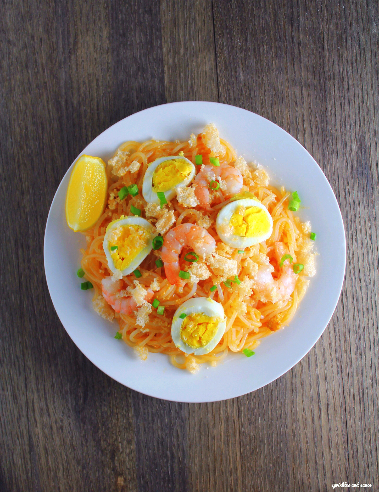

Palabok

Description
This Easy Palabok Recipe is as simple as it can get. Nevertheless, the result is delicious. Newbies in the kitchen should be able to cook this at home, as long the recipe below and the cooking video are followed by the dot.
Ingredients
- 8 ounces bihon
- 1 piece Knorr Shrimp Cube
- 3/4 cups ground pork
- 12 pieces shrimp cooked
- 1/4 cup tinapa flakes
- 2 cups annatto water
- 1/4 cup all-purpose flour
- 1 piece onion minced
- 4 cloves garlic crushed
- 2 pieces eggs boiled
- 1/4 cup green onions chopped
- 1/4 cup garlic toasted
- 1/2 cup chicharon
- 1/4 cup cooking oil
- 1 pint water hot
- Patis and ground white pepper to taste
Steps
- Boil water. Arrange bihon (rice sticks) in a wide and deep tray. Pour water until noodles are totally submerged. Soak for 12 to 15 minutes. Drain water and set the bihon aside.
- Heat oil in a cooking pot. Saute garlic and onion.
- Add ground pork. Saute until pork turns light brown.Add tinapa flakes. Stir. Gradually add all-purpose flour. Continue to cook while stirring until all of the flour are consumed. Cook between low to medium heat for 5 minutes.
- Gradually pour annatto water into the pot. Stir constantly until desired consistency is desired. The sauce should not be as thick as paste.
- Add Knorr Shrimp Cube. Stir until it melts. Season with patis and ground white pepper.
- Arrange the bihon on a plate, pour palabok sauce over it. top with shrimp, chicharon, and toasted garlic, and scallions. Serve. Share and enjoy!